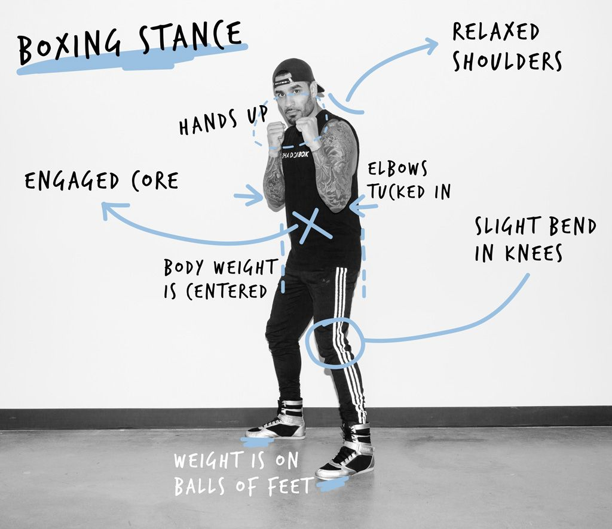
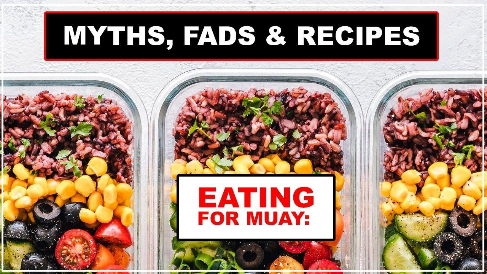

The Boxing Stance

Every boxing coach in the existence of time says the same thing: TUCK YOUR ELBOWS IN.
When they demonstrate it, they put their elbows close in to their body, touching their ribs, and their arms almost perpendicular to the floor.
In your boxing stance, your knuckles should be facing the sky. Keep your hands level and your elbows tucked in to your sides. After you throw a punch, your hands should return to this guard position immediately for a strong defensive stance that keeps your head safe from an opponent's punches.
Read more...
The Diet

Nutrition is one of the most overlooked aspects of being a fighter, yet it's also something every serious hobbyist or competitor needs to be serious about - not only for performance in the ring but to keep healthy in general.
Today, we will be talking about common fad diets, bad eating habits and, most importantly, having a healthy relationship with food, in order to be the best fighters we can.
Read more...
Boxing Drills
Focus mitt drills are an effective way to improve boxing skills like your hand-body coordination, speed, defense, fight IQ, and punching technique. It gives your trainer a chance to correct the things you do wrongly, and it allows you to refine the techniques you’re already good at.
Focus mitts are the closest thing to getting inside a ring and exchanging punches with a sparring partner or opponent. It allows you to work on all the things you can work on while sparring without having to deal with the contact. It’s the next step after shadowboxing to prepare you for sparring sessions and beyond.
Read more...